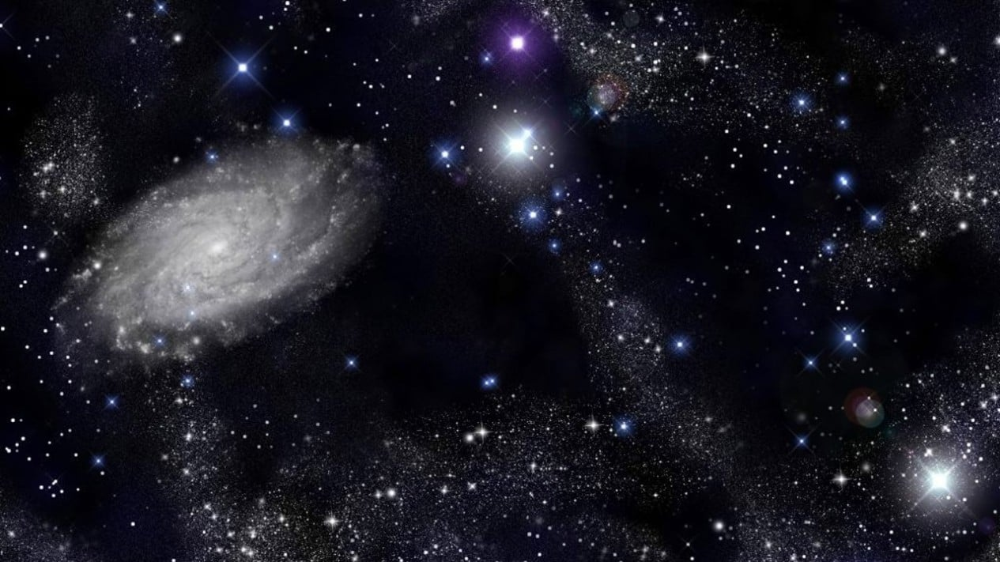
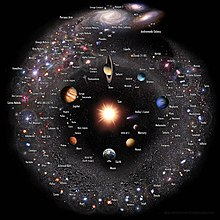

RAJA MUHAMMAD ALAM ARRAZAQ

The universe is all of space and time[a] and their contents.[10] It comprises all of existence, any fundamental interaction, physical process and physical constant, and therefore all forms of energy and matter, and the structures they form, from sub-atomic particles to entire galaxies. Space and time, according to the prevailing cosmological theory of the Big Bang, emerged together 13.787±0.020 billion years ago,[11] and the universe has been expanding ever since. Today the universe has expanded into an age and size that is physically only in parts observable as the observable universe, which is approximately 93 billion light-years in diameter at the present day, while the spatial size, if any, of the entire universe is unknown
What Is The Universe?
he physical universe is defined as all of space and time[a] (collectively referred to as spacetime) and their contents.[10] Such contents comprise all of energy in its various forms, including electromagnetic radiation and matter, and therefore planets, moons, stars, galaxies, and the contents of intergalactic space.[21][22][23] The universe also includes the physical laws that influence energy and matter, such as conservation laws, classical mechanics, and relativity.[24]
The universe is often defined as "the totality of existence", or everything that exists, everything that has existed, and everything that will exist.[24] In fact, some philosophers and scientists support the inclusion of ideas and abstract concepts—such as mathematics and logic—in the definition of the universe.[26][27][28] The word universe may also refer to concepts such as the cosmos, the world, and nature

The word universe derives from the Old French word univers, which in turn derives from the Latin word universus, meaning 'combined into one'.[31] The Latin word 'universum' was used by Cicero and later Latin authors in many of the same senses as the modern English word is used.A term for universe among the ancient Greek philosophers from Pythagoras onwards was τὸ πᾶν (tò pân) 'the all', defined as all matter and all space, and τὸ ὅλον (tò hólon) 'all things', which did not necessarily include the void.[33][34] Another synonym was ὁ κόσμος (ho kósmos) meaning 'the world, the cosmos'.[35] Synonyms are also found in Latin authors (totum, mundus, natura)[36] and survive in modern languages, e.g., the German words Das All, Weltall, and Natur for universe. The same synonyms are found in English, such as everything (as in the theory of everything), the cosmos (as in cosmology), the world (as in the many-worlds interpretation), and nature (as in natural laws or natural philosophy).